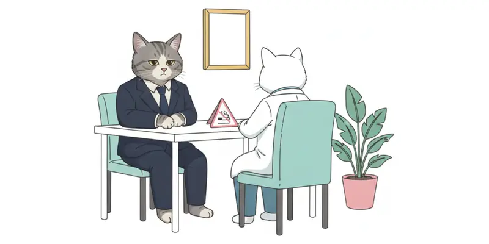

禁煙外来 動機づけ面接シミュレーター
返答を選ぶと、患者さんが声で答えます。最後に面接の評価と講評が出ます。
家族に促されて初めて禁煙外来を訪れた、50代の営業職のネコタさん。あなたは医師として3つの選択肢から返答を5回選び、ネコタさん自身の言葉で変わる理由を話してもらう面接を目指します。返答を選ぶたびに、動機づけ面接の行動の種類（聞き返し、是認、説得など）と短い解説が表示されます。

使い方
- 下のQRコードから公開ページを開く（スマートフォンでもパソコンでも使えます）
- 「面接をはじめる」を押す。音声が流れるので、音量を上げるかイヤホンを使う
- 3つの返答から1つを選ぶ。これを5回くり返す
- 最後に点数、返答ごとの振り返り、指導医の講評が出る
評価のしくみ
- MITI 4.2.1の考え方を簡略化した指標を表示します（聞き返しと質問の比、複雑な聞き返しの割合、MIに一致する行動・一致しない行動の数）
- 点数は、MIに一致する返答の割合（60点）と、最後の面接の状態（40点）の合計です
- 結末は3種類あり、選び方で変わります
シミュレーターを開くブラウザでそのまま動きます。インストールは不要です。shoei05.github.io/kinen-mi-simulator/
講演スライドWS-4の講演スライドです。作り方の流れと作例の動画を載せています。shoei05.github.io/kinen-mi-simulator/slides/
設計・作成ガイド同じ形の教材を作るための、ゴール設定、評価の物差し、設計用チェックシートです。github.com/shoei05/kinen-mi-simulator
注意
・登場人物と会話はすべて架空です。医療上の助言を目的としたものではありません。
・指標は教育用の簡略版で、MITIの正式なコーディングや評価基準の代わりにはなりません。
・SNSアプリの中のブラウザでは音声が流れないことがあります。その場合はSafariやChromeで開いてください。
・素材音声はGoogle Gemini 3.8 Flash TTS、イラストはGemini 2.5 Flash Imageで生成しました。